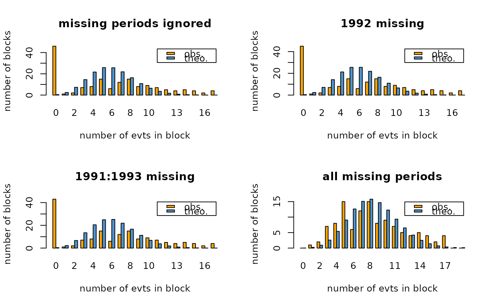
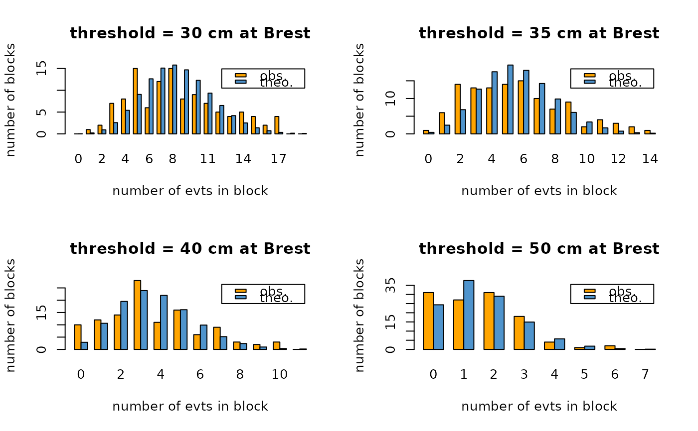

Barplot for Renouv "Over Threshold" counts
barplotRenouv.RdBarplot for "Over Threshold" counts in time blocks (usually years)
Arguments
- data
-
A dataframe object containing the variables.
- blockname
-
Name of the "block" variable (column in
data). This variable should contain integers, or be of class "factor", but with integer values such as year numbers. - varname
-
Name of the variable (e.g.
"Surge"). - threshold
-
Only obs for which the variable exceeds
thresholdwill be taken into account. - na.block
-
Values of blocks containing missing values. See the Details section.
- plot
-
If
FALSEtests are computed without producing any plot. - main
-
Character for main title or
NULLin which case a default main title is used. - xlab
-
Character for x axis label or
NULLin which case a default lab is used. - ylab
-
Character for y axis or
NULLin which case a default lab is used. - mono
-
If
FALSEbarplot will have colors, else greyscale will be used. - prob.theo
-
The total theoretical probability corresponding to the plotted (theoretical) bars.
- ...
Further args to be passed to
barplot.
Details
Blocks described in the na.block are omitted in the
determination of counts. The object given in the na.block is
coerced to character and the same is done for values of block
before comparing them to the na.block values. If block
variable is of class factor with levels representing years
(e.g. 1980, 1981, etc.) missing blocks can be specified either as
c("1980", "1981") or as numeric c(1980, 1981).
For the chi-square test, counts for neighbouring frequency classes are
grouped in order to reach a minimum frequency of 5 in each
group. E.g. if we expect respectively 1.0, 3.8 and
7.0 blocks with frequency 0, 1 and 2 for
events, the three counts are grouped in one group with frequency
1.0+3.8+7.0=11.8. Note that this strategy of grouping is not
unique and is likely to weaken the power of the test. Before
grouping, the higher class theoretical probability is computed as the
probability to obtain a count equal to or greater than the max value.
Value
A list with the following objects.
- freq
-
frequency table (matrix) giving observed and theoretical (Poisson) frequencies as well as a group number for the chi-square test.
- overdispersion
-
the overdispersion coefficient (variance/mean ratio).
- disp.test
-
a list giving results of the (over)dispersion test. See the reference Yagouti and al. in the References section.
- chisq.test
-
a list giving results for the chis-square test of goodness-of-fit to the Poisson distribution.
- tests
a matrix with the two tests displayed in two rows.
For both tests, the statistic follows a chi-square distribution under the null hypothesis . The list of results contains the statistic
statistic, the number of degrees of freedom df and
the \(p\)-value p.value.
References
See Yagouti A., Abi-Zeid I., Ouarda, T.B.M.J. and B. Bobée (2001), Revue de processus ponctuels et synthèse de tests statistiques pour le choix d'un type de processus Revue des Sciences de l'Eau, 1, pp. 323-361.
Note
The two tests: (over-)dispersion and chi-square have one-sided (upper tail) \(p\)-value. In other words, we do not intend to reject when statistics take "abnormally small" values, but only when abnormally large values are met.
Examples
## na.block influence for Brest data
opar <- par(mfrow = c(2, 2))
bp1 <- barplotRenouv(data = Brest.years, threshold = 30,
main = "missing periods ignored")
#>
#> Goodness-of-fit test (Poisson). Stat = 277.1667 df = 8 p-value = 0
#>
#> Dispersion index 4.208457 p-value 0
bp2 <- barplotRenouv(data = Brest.years, threshold = 30,
na.block = 1992, main = "1992 missing")
#> number of obs. in NA blocks: 1
#>
#> Goodness-of-fit test (Poisson). Stat = 271.7896 df = 8 p-value = 0
#>
#> Dispersion index 4.170886 p-value 0
bp3 <- barplotRenouv(data = Brest.years, threshold = 30,
na.block = 1991:1993, main ="1991:1993 missing")
#> number of obs. in NA blocks: 3
#>
#> Goodness-of-fit test (Poisson). Stat = 261.2294 df = 8 p-value = 0
#>
#> Dispersion index 4.094299 p-value 0
bp4 <- barplotRenouv(data = Brest.years, threshold = 30,
na.block = Brest.years.missing, main = "all missing periods")
#> number of obs. in NA blocks: 46
#>
#> Goodness-of-fit test (Poisson). Stat = 30.97919 df = 8 p-value = 0.0001417065
#>
#> Dispersion index 1.791952 p-value 4.850723e-07

par(opar)
## threshold influence
opar <- par(mfrow = c(2,2))
thresh <- c(30, 35, 40, 50)
for (i in 1:length(thresh)) {
bp <- barplotRenouv(data = Brest.years, threshold = thresh[i],
na.block = Brest.years.missing,
main = paste("threshold =", thresh[i], "cm at Brest"))
}
#> number of obs. in NA blocks: 46
#>
#> Goodness-of-fit test (Poisson). Stat = 30.97919 df = 8 p-value = 0.0001417065
#>
#> Dispersion index 1.791952 p-value 4.850723e-07
#> number of obs. in NA blocks: 46
#>
#> Goodness-of-fit test (Poisson). Stat = 24.5375 df = 7 p-value = 0.0009161369
#>
#> Dispersion index 1.740394 p-value 1.827177e-06
#> number of obs. in NA blocks: 46
#>
#> Goodness-of-fit test (Poisson). Stat = 21.5105 df = 5 p-value = 0.000648504
#>
#> Dispersion index 1.605952 p-value 4.652672e-05
#> number of obs. in NA blocks: 46
#>
#> Goodness-of-fit test (Poisson). Stat = 5.722912 df = 3 p-value = 0.1258975
#>
#> Dispersion index 1.159493 p-value 0.1181542

par(opar)